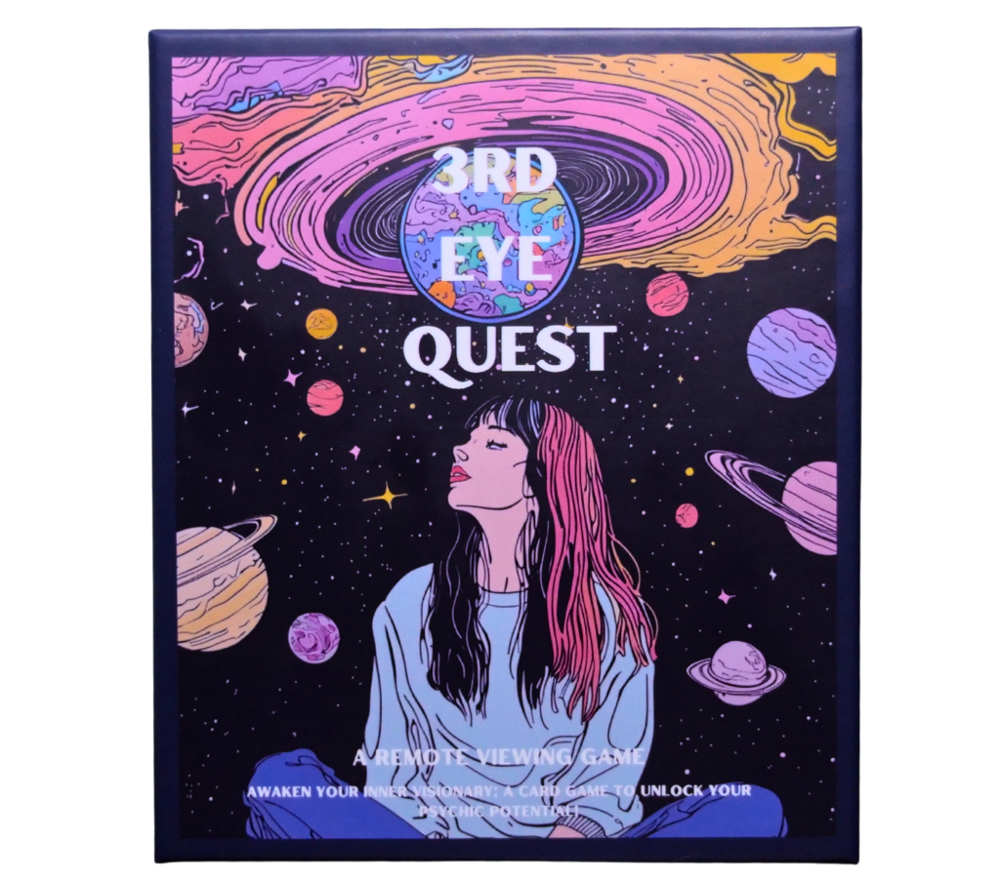

3rd Eye Quest
Unlock your intuition. Probe the truth. Master the quest.
Open Player Assist GuideFast rounds • Group play • Intuition training
Unlock your intuition. Probe the truth. Master the quest.
Open Player Assist GuideOne player acts as the Judge and secretly draws a card from the Landscape, Animal, Color, or Object decks. They keep the image hidden from the other players.
Viewers close their eyes, breathe deeply, and record intuitive impressions. Use the Digital Assist Guide to probe for textures, emotions, and shapes.
The Judge reveals the card. The player whose description most accurately matches the target wins the round and keeps the card. The most intuitive player is crowned the Master Viewer!
"Describe, don't define. Trust your first signal."
3rd Eye Quest is built for game nights, spiritual circles, and anyone who wants to train perception in a fun way. Bring curiosity. Leave overthinking.
Start with the Guide See How It Works